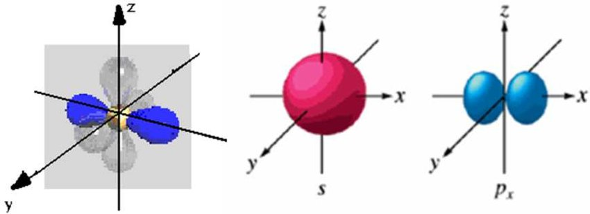
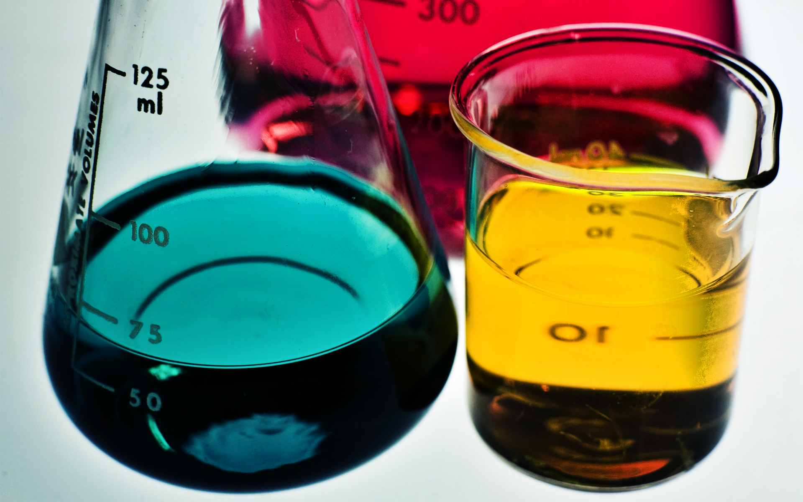
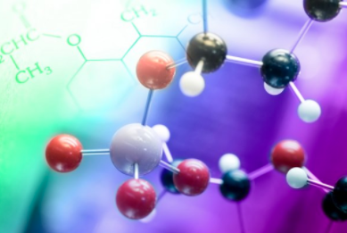
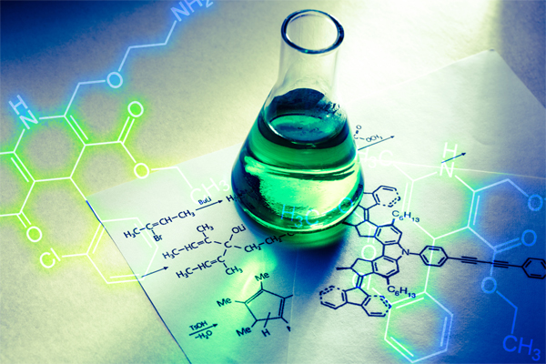

*Please be advised that these resources serve to supplement and not replace your actual chemistry resources. When in doubt, refer to your instructor and textbook for your main source material*
General Chemistry I
General Chemistry II
General Chemistry III
Organic Chemistry I
Organic Chemistry II





Significant Figures and Dimensional Analysis
Determining Significant Figures
Operators with Significant Figures
Applied Dimensional Analysis
The Quantum Mechanical Model of the Atom
Planck's Constant and the Speed of Light
Energy, Wavelength, and Reinberg's Equation
Wave Nature of Matter: de Broglie Wavelength, Heisenberg's Uncertainty Principle
Quantum Mechanics Practice Problems
Periodic Trends and Properties
Interpreting the Periodic Table
Ideas behind Valence Electons
Atomic Radii, Effective Nuclear Charge and Ionization Energies
Chemical Bonding: The Lewis Model
Electronegativity and Bond Polarity
Resonance and Formal Charge
Drawing Odd Lewis Structures
Chemical Bonding: Valence Bonding and Molecular Orbital Theory
VSEPR Theory: Electron and Molecular Geometry
Hybridization and pi and sigma Bonds
Molecules, Compounds, and Chemical Equations
Naming and Writing Molecular Compounds
Reaction Schemes and Writing Balanced Reactions
Introduction to the Mole: Percent Composition, and Empirical Formula
Stoichiometry and Aqueous Reactions
Limiting Reactants, Theoretical and Percent Yield
Molarity and Solutions Stoichiometry
Precipitation Reactions and Net Ionic Reactions
Oxidation-Reduction Reactions
Stoichiometry Practice Problems
Thermochemistry
Exothermic and Endothermic Reactions
Heat Capacity and Calorimery
Enthalpy, Stoichiometry and Enthalpies of Formation
Ideal Gasses
Relationships between Density, Molar Volume, and Molar Mass
Intermolecular Forces and Phases
London Dipsersion, Dipole-dipole, Hydrogen, Ion-Dipole Forces
Boiling Point and Vaporization
Heating Curves and Enthalpy of Fusion/Sublimation
Solutions and Colligative Properties
Molality, Freezing Point Depression and Boiling Point Elevation
Raoult's Law and Vapor Pressure Calculations
Solid-State Chemistry
Chemical Kinetics
Simple Rate Law Expressions
Arrhenius Equation and Activation Energy
Collision Model and Reaction Mechanisms
Chemical Equilibrum
Equilibrium Constant and ICE Tables
The Relationship between Kc, Kp, and Kq
Chemical Equilibrium Practice Problems
Acid and Base Chemistry
Conjugate Acids and Bases
Strong and Weak Acids and Bases, Ka
Determining Acid and Base Strength
Autoionization of Water, Kw, kb, and pH
Determining pH in Strong and Weak Acid Solutions
Determining pH in Base Solutions
Acid-Base Properties of Salts
Acid-Base Practice Problems
Aqueous Ionic Equilibria
Buffers and the Henderson Hasselbalch Equation
Titrations Practice Problems
Coordination Chemistry
Determining Isomers in Coordination Compounds
Spectrochemical Series and Crystal Field Theory
Free Energy and Thermodynamics
Change in Standard Entropy, Change in Gibb's Free Energy
Nonstandard Gibb's Free Energy
Gibb's Free Energy and Equilibrium
Electrochemistry
Writing Half-Reactions and Ecell Calculations
Intro to Organic Chemistry
Hybridization and Saturation
Drawing Organic Hydrocarbons
Simple Reactions of Alkanes and Isomerism
Naming of Alcohols, Aldehydes, Ketones, Carboxylic Acids, Esters and Ethers
General Chemistry Review: Electronegativty and Hybridization
Organic Nomenclature and Functional Groups
Naming Simple Hydrocarbons
Visualizations of Organic Molecules
Chirality and Stereochemistry
Substitution Reactions of Alkyl Halides, Sn2 and Sn1
Elimination Reactions of Alkyl Halides, E2 and E1
Reactions of Alkenes
Structural Determination Techniques for Organic Molecules
Nuclear Magnetic Resonance (NMR)
Organometallic Compounds
Reactions of Alcohols, Ethers and Epoxides
Reactions of Aldehydes and Ketones
Carbohydrates
Reactions of Carboxylic Acids and Esters
Aromaticity and the Chemistry of Benzene
Enols and the Enolate Anion
Amines and Amides
Amino Acids, Peptides and Proteins